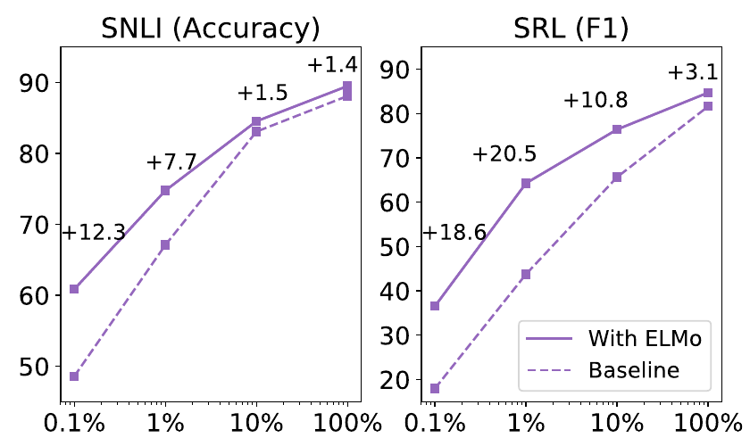
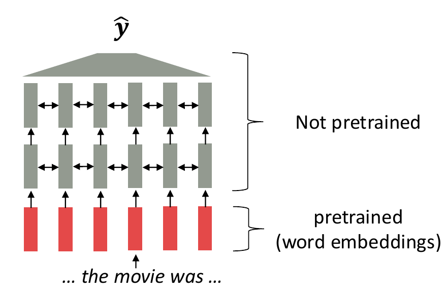
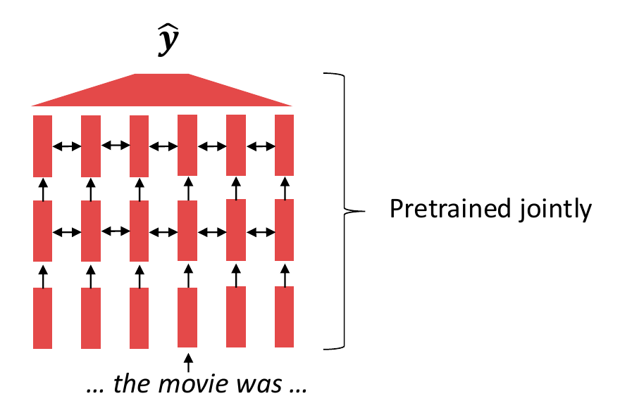
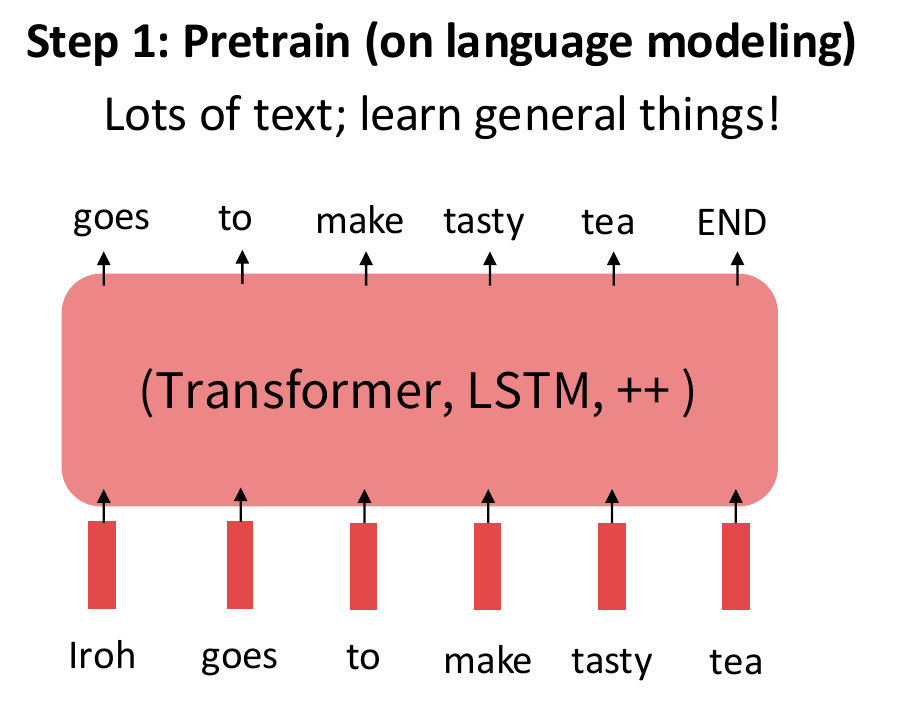
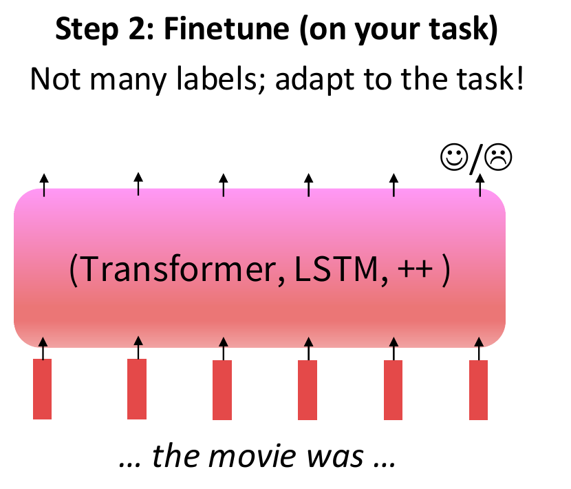
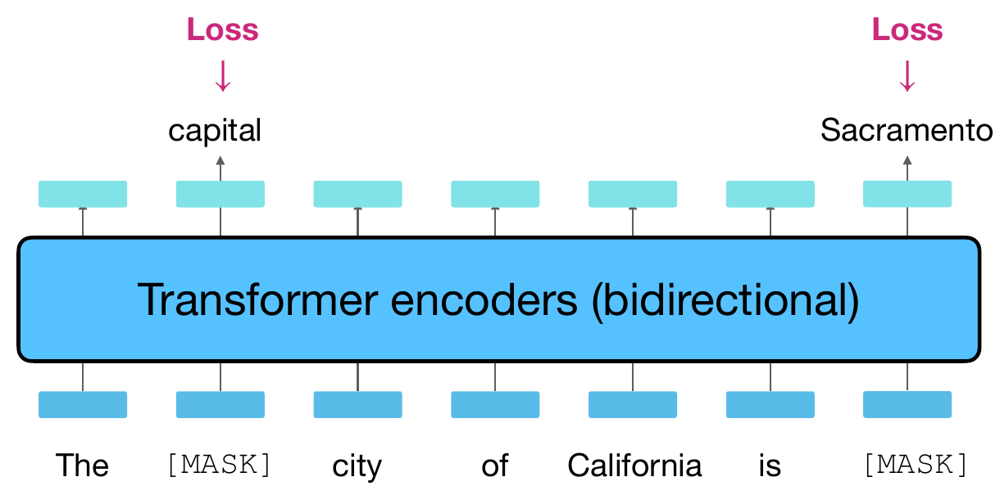
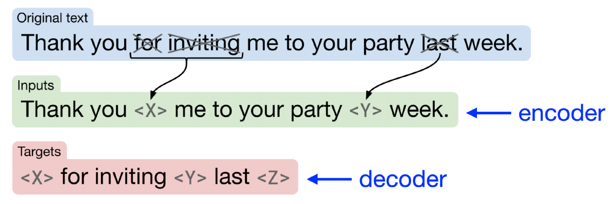

Teach the model to interpret language—and to make the sentiment decision.
Motivation: Stanford CS224N, pretraining lecture, PDF p. 10. Original schematic; no model prediction is shown.
One word type, one lookup vector
RECALL WORD2VEC Learned from text before the task
MONEY CONTEXT
She deposited money at the bank.
RIVER CONTEXT
She sat beside the river bank.
bank
→
THE SAME LOOKUP IN BOTH SENTENCES
e(bank)
The lookup knows the word. It does not receive the sentence.
Content: Berkeley CS288, PDF pp. 4–6; Stanford CS224N, p. 9. Original bank example. Vector colors are schematic, not measured values.
Same word. Different surrounding evidence.
Same model · fixed weights
She deposited money at the bank.
WORD LOOKUP
e(bank) stays the same
WHOLE SENTENCE ENTERSContextual model→
BANK’S OUTPUT STATE
h(bank | sentence) can change
DISCUSS
A financial use of “bank” should resemble which context? What would we need to measure to check that?
Next: ELMo. An early example of making contextual representations reusable.
Adapted teaching example: Berkeley CS288, pp. 6–8, 10–16; Peters et al. (2018), ELMo. Schematic vectors: switching context illustrates dependence, not measured sense recognition.
ELMo: contextual features we can reuse
Embeddings from Language Models · Peters et al., 2018
A word representation built from the internal states of pretrained forward and backward LSTM language models.
left context →word← right context
Mix their layer representations to give each word a vector that depends on its sentence.
Reuse as features: keep the language-model weights fixed while training the task model and the layer mixture.
Do pretrained features help with fewer labels?

Horizontal: fraction of labeled task-training data. Vertical: SNLI accuracy / SRL F1 (higher is better).
Larger gains when task labels are scarce.
The language model supplies features. The downstream model still learns its own task.
Peters et al. (2018), Deep Contextualized Word Representations, §§3.1–3.3, 5.4 and Figure 1 (PDF p. 8). Original published curves, not classroom runs. SNLI: sentence-pair inference; SRL: semantic role labeling.
Give the whole model a head start
WHAT IS ALREADY LEARNED BEFORE THE TASK?
EARLIER STARTING POINTPretrained word embeddings

The contextual layers still start from random weights.
WHOLE-MODEL PRETRAININGPretrained contextual layers too

The task starts from a model already trained on text.
Learned during pretraining Not yet pretrained
Reuse the contextual model’s parameters. A new task-specific head may still be initialized from scratch.
Figures reproduced from Diyi Yang, Stanford CS224N (2026), pretraining lecture, PDF pp. 10–11. Original colors retained; these are schematic networks.
Pretrain once. Adapt to a new task.
RAW TEXT→LEARN PARAMETERS θ→SAVE WEIGHTS→INITIALIZE THE TASK MODEL

copy θ→parameter values

Add the task head; continue learning from labeled reviews.
Reusable word vectors→Contextual representations→A reusable model
Reviews come with sentiment labels. If pretraining data is just text, where do the answers come from?
Figures: Stanford CS224N, PDF p. 19 (printed slide 20). Transfer motivation: Berkeley CS288, pp. 19–20. Arrows and staged annotations added for this course.
The answer is already in the text
02 · TEXT SUPPLIES ITS OWN TARGETS
Choose a word to withhold. The source sentence stays unchanged.
SOURCE TEXT · visible to us when constructing the example
MODEL INPUT
The selected word is withheld here.
TARGET · KEPT SEPARATELY?
We construct the question. The observed text supplies the answer.
Berkeley CS288, PDF pp. 4–5: turn unlabeled text into prediction examples. Adapted from our earlier corpus interaction; exact text manipulation, not model inference.
Keep the text. Change the question.
SAME SOURCEThe cat sat on the mat
01
Recover a missing word
Left and right context
MODEL INPUT
The____satonthemat
TARGETcat
02
Predict the next word
Preceding context only
MODEL INPUT
Thecatsaton
The following words are not supplied.
TARGETthe
The source is the same. What the model can see is different.
Adapted from Stanford CS224N, PDF pp. 12–18, and Berkeley CS288, pp. 36 and 58. Word-level teaching examples; detailed BERT and GPT recipes follow later.
One sentence. How many training examples?
OUR ENTIRE CORPUSThe cat sat on the mat
1The2cat3sat4on5the6mat
PAUSE · 45 SECONDS
How many different input–target pairs can we extract?
The rule: withhold exactly one word position per example. Keep every other word visible. Predict the original word.
Write two of your examples.
Count positions—even when the same word appears more than once.
Reuses the counting activity from the preserved first draft, narrowed to one sentence. Word positions only; no punctuation, padding, or special tokens.
Six positions, six training examples
The cat sat on the mat → withhold one position at a time
1 sentence × 6 positions = 6 pairs
SELECTED MODEL INPUT
____ cat sat on the mat
TARGET TO PREDICTThe
No new annotation. Each target was already in the sentence.
Interactive enumeration adapted from the first draft’s pair-matrix simulation. Exact constructed examples, not model predictions or a training run; overlapping examples are not independent observations.
Text → examples → a learning signal
Self-supervised learning still has targets. We obtain them from the text instead of annotating each example.
NEXT · BERT
How can a model read both sides of a word without seeing the answer it must predict?
Original training-flow diagram. Based on Stanford CS224N, PDF pp. 11, 18–19, and Berkeley CS288, pp. 35–36. The target enters the loss, not the predictor.
Three families: trace the attention paths
Read bottom → top. Each square is one token state; each line is an allowed attention connection.
Full visibilityCausal visibilityCross-attention to encoder states
Trace the middle position: where can its information come from?
Original drawing using the visual convention of Raffel et al., T5, Fig. 4, p. 17 and Stanford CS224N. Connections show permission, not measured weights. Feed-forward, residual and normalization operations omitted.
Start here: read both sides
Our running sentence: The cat sat on the mat.
NEXT · BERT
How do we train this encoder to use both sides without giving away the answer?
Schematic information flow, not measured attention or a model prediction. The original word is the training target. Architecture overview adapted from the preserved lecture draft.
Our missing-word task becomes masked language modeling
Our example: the [MASK] sat on the mat → target: cat
Now trace the same mechanism in Berkeley’s two-target example.

Architecture: read both sides of the supplied input. Objective: recover original tokens at selected positions.
Diagram cropped from Berkeley CS288, Spring 2026, PDF p. 36; BERT: Devlin et al. (2019), §3.1. Target labels are not measured predictions. Two masks illustrate the mechanism, not a literal 15% rate.
Build the input at each position
Token identity + position + segment identity → one input vector.
[CLS] supplies a state for sequence-level prediction.
[SEP] marks a boundary. Segment A/B distinguishes two passages.
Shown: one segment, no padding. BERT uses WordPiece tokens and learned position embeddings.
Original example-based drawing following Devlin et al., Fig. 2; Stanford CS224N, PDF pp. 27–28. Each colored box denotes a vector, not a scalar.
First select targets. Then choose their replacement.
Keep two decisions separate: where to predict, then what the input contains.
The 80 / 10 / 10 probabilities apply only within the selected 15%.
Keep the original token as the target in every branch. Finite samples need not match the percentages exactly.
Stanford CS224N, PDF p. 27; Berkeley CS288, PDF p. 38; original BERT §3.1. Schematic selection, no sampling or model execution. Exclude [CLS], [SEP], and padding.
Select positions first. Then corrupt their inputs.
15%of eligible token positions selected as prediction targets
→
80 / 10 / 10of those selected: mask / random / unchanged
Inspect one selected position. Same original sentence and target.
the [MASK] sat on the mat
Position
Original
Model receives
Loss target
3 · not selected
sat
sat
Ignored
2 · selected
cat
[MASK]
cat · always
The answer disappears from this input position; context must supply evidence.
Devlin et al., 2019, §3.1 · schematic corruption inspector, no model inference. Positions include [CLS] at 0; the random replacement “table” is fixed for inspection.
Which probabilities should training reward?
ORIGINALthe cat sat on the mat
the[MASK]sat on the[MASK]
Selected target
p(original token | corrupted input)
cat
0.25
mat
0.50
PAUSE60 seconds
Compute the mean loss over the two selected positions. Use −ln(p) per target. Which prediction contributes more?
Given: ln(2) ≈ 0.693 and ln(4) ≈ 1.386. Ignore all unselected positions. Use natural logarithms.
Illustrative probabilities, not measured BERT outputs. Both blanks are present in the same model input.
A smaller probability for the observed token means a larger penalty.
Mean cross-entropy over selected positions · one training example shown; training averages over examples and corruption draws. Gradients update the prediction head and contextual reader.
Original BERT also asked: do these passages follow?
A SHORT DOCUMENT · AUTHORED EXAMPLE
A Sara opened her book.
B She began to read.
50% · actual continuation
A + “She began to read.”
IsNext
50% · random corpus passage
A + “The train arrived late.”
NotNext
[CLS]passage A[SEP]passage B[SEP]
[CLS] representation → binary classifier
Original training objective: MLM loss + NSP loss.
Devlin et al., 2019, §3.1 · NSP = next sentence prediction. The labels come from document order and sampling; no human annotation.
Reuse the encoder. Change the prediction head.
One learned backbone → different output interfaces.
New task labels train the new head. In full fine-tuning, the encoder also changes.
Session 2 will unpack these updates. Here, identify which contextual state each head reads.
Original diagrams adapted from Berkeley CS288, PDF pp. 43–46, and BERT Fig. 1. Illustrative target labels; O = outside a named entity. Word-level alignment shown; subword alignment deferred.
A reader can use the right context. A writer must create it.
SEESBoth sides of corrupted inputLEARNSOriginal tokens at selected positionsREUSESTrained encoder parameters
How should the training task change when only the prefix is available?
Conceptual information flow, not measured attention. Next: GPT and causal prediction. BERT-style encoders can support other generation procedures; the original MLM recipe is not a left-to-right generation recipe.
GPT: use language modeling to learn reusable weights
The autoregressive objective is familiar. Its role here is to prepare a model for reuse.
Transfer the learned parameters, together with the model’s tokenizer and configuration.
The corpus supplies the supervision. Corpus selection and preprocessing shape what the model can learn.
Original teaching diagram. Berkeley CS288, PDF pp. 57–59; Radford et al. (2018), §3. Authored corpus excerpts; no training run is shown.
Same corpus. A different distribution of supervision.
ONE SOURCE WINDOWthe cat sat on the mat
BERT · selected recovery
SUPPLIED INPUT
the [MASK] sat on the [MASK]
DIRECT LOSS TARGETS
cat · mat
Each selected prediction can use both sides of the corrupted input.
GPT · causal language modeling
SUPPLIED INPUT
the cat sat on the
ALIGNED LOSS TARGETS
cat · sat · on · the · mat
Each prediction uses its observed prefix. Score each eligible next-token target.
Familiar loss, shown for this window. Same corpus does not mean the same learning signal—or a guaranteed winner.
Example-based adaptation of Berkeley’s matched MLM/causal diagrams, PDF pp. 36 and 58; Stanford CS224N, PDF p. 31. Two BERT targets are illustrative, not a 15% sample. Boundary tokens omitted; the first word is supplied as context.
A pretrained checkpoint is the result of learning
Follow the weights across the boundary between pretraining and use.
TEXT
Corpus window: the cat sat on the mat
SUPERVISION / OUTPUT
Observed next tokens supply the training targets.
PARAMETERSWeights change
Loss → gradients → optimizer update
Save the trained checkpoint for reuse.
A base model learns text continuation. Pretraining alone does not establish reliable instruction following.
Later task adaptation can update these weights again. Ordinary decoding does not.
Reuses the preserved training/generation example, narrowed to the weight lifecycle. The continuation is authored, not a measured prediction. Stanford CS224N, PDF p. 31; Berkeley CS288, PDF pp. 57–59. Adaptation and prompting are developed in Session 2.
OPEN QUESTIONCan reconstruction use a separate output sequence?
How can we read the whole corrupted source while generating only what is missing?
Conceptual bridge to T5, not its exact sentinel-token format. Gap labels and outputs are authored targets. Stanford CS224N, PDF p. 36; Berkeley CS288, PDF p. 66.
T5: remove spans, keep the text as supervision
Our source: the cat sat on the mat
Two gaps: one contains two words, the other one word. The original text supplies both answers.

One gap → one sentinel. Reconstruct the missing spans in a separate output sequence.
T5 = Text-to-Text Transfer Transformer · Recipe: 15% corrupted tokens; mean span length 3.
Raffel et al. (2020), Fig. 2, reproduced through Berkeley CS288, PDF p. 66; also shown in Stanford CS224N, PDF p. 36. Highlighted spans are handpicked examples, not measured outputs or a literal 15% sample.
Inspect the source and the reconstruction target
ORIGINAL · SAME SIX WORDS
the cat sat on the mat
ENCODER INPUT · x̃
DECODER TARGET · y
S₀ marks the first gap; S₁ the second. S₂ closes the final span.
S₀ / S₁ / S₂ abbreviate <extra_id_0> / <extra_id_1> / <extra_id_2>. EOS ends a sequence; it is different from a sentinel.
Reuses the preserved #seq2seq-recipe and its multiword extension. Paper-style sentinel construction; boundary EOS tokens shown explicitly. Word-level teaching notation, not a tokenizer trace or model run.
A reconstruction loss trains both stacks
FIXED SOURCE · ONE-WORD GAPSthe S₀ sat on the S₁ EOS
Score every non-padding target token: missing content, sentinels, and EOS.
Conditional cross-entropy for the displayed paper-style example; no numerical exercise. START is the decoder initialization symbol (original T5 uses its pad-token ID). Source tokens have no separate direct reconstruction-loss terms.
Reuse the weights and the text-to-text interface
A task changes the input and target text. The encoder–decoder interface stays familiar.
Stage / task
Input text
Target text
Span pretraining
the S₀ sat on the S₁
S₀ cat S₁ mat S₂
Sentiment adaptation
sst2 sentence: I loved this film.
positive
Translation adaptation
translate English to French: The cat sleeps.
Le chat dort.
PRETRAIN ON CORPUS TEXTLearn encoder–decoder weights
→
ADAPT WITH TASK EXAMPLESInitialize from those same weights
The source of supervision changes: removed corpus text → task labels or paired texts.
Raffel et al. (2020), §2.4 and Fig. 1. Authored input/target examples, not model predictions. Boundary EOS omitted in this interface table. Detailed adaptation follows in Session 2.
Three recipes. One question about learned weights.
What does each recipe teach the model to recover—and what weights can we reuse?
Original conceptual bridge. It previews the remaining Session 1 comparison; it does not imply that the three models share weights or have interchangeable objectives.
One sentence. Build three pretraining examples.
GIVEN · WORD POSITIONS FOR THIS EXERCISE1 the · 2 cat · 3 sat · 4 on · 5 the · 6 mat
PAUSE · WORK IN PAIRS · 2 MINUTES
Write the model input(s) and the loss targets for each recipe.
Mark which positions receive a direct loss. Keep the target separate from the input that predicts it.
BERT
Select positions 2 and 6; use the [MASK] branch for both. Omit [CLS] and [SEP].
GPT
Use the as initial context. Score the remaining observed words. No START or EOS in this window.
T5
Remove cat and mat as separate spans. Include source, decoder input, and decoder target.
T5 conventions: S₀/S₁ identify the gaps; S₂ closes the last span. Append EOS to source and target. Shift the decoder input using START.
Fixed teaching choices, not random sampling or literal corruption-rate estimates. Use the same boundary conventions as the preceding GPT and T5 examples. Solution on the following slide.
Same text, three worked constructions
UNCHANGED SOURCEthe cat sat on the mat
Recipe
Model input(s)
Direct loss targets
BERT MLM only
the [MASK] sat on the [MASK]
cat at position 2 mat at position 6 Other positions: no direct MLM term
GPT
the cat sat on the
cat · sat · on · the · mat Aligned to the five input positions
T5
ENCODERthe S₀ sat on the S₁ EOS DECODERSTART S₀ cat S₁ mat S₂
S₀ · cat · S₁ · mat · S₂ · EOS Sentinels and EOS are targets too
Targets come from the same text; the supervised positions and available context differ.
Reuses the preserved three-recipe comparison, updated to this lecture’s GPT boundary convention. S₀/S₁/S₂ are sentinel aliases. Constructed examples, not model outputs.
Compare the supervision and the parameters it trains
BERT
CONTEXT FOR A TARGET
Both sides of the corrupted input
PARAMETERS LEARNED
Embeddings, encoder, and pretraining heads
Original recipe also included NSP.
GPT
CONTEXT FOR A TARGET
The observed prefix
PARAMETERS LEARNED
Embeddings, causal decoder, and vocabulary head
No task labels needed for corpus LM training.
T5
CONTEXT FOR A TARGET
The corrupted source and earlier target tokens
PARAMETERS LEARNED
Embeddings, encoder, decoder, and vocabulary head
Decoder loss also trains the encoder.
Architecture controls information access. The objective chooses the supervision. Pretraining changes weights.
More targets—or a smaller loss under a different objective—does not establish a better pretrained model.
Synthesis of the preceding BERT, GPT, and T5 sections. Representative recipes, not exclusive capabilities. Shared/tied embeddings remain shared parameters.
We reuse weights. We compute new representations.
PRETRAINING TARGETcat
Retained from the observed corpus text.
DOWNSTREAM TASK LABELpositive
A sentiment annotation for this review.
The checkpoint provides a learned starting point. A new task still needs a defined output and appropriate supervision or use strategy.
Conceptual distinction between parameters, activations, and labels. The review label is authored; no model prediction is shown. Keep the matching tokenizer and configuration with the weights.
From word prediction to sentiment
END OF SESSION 1 · NEXT: REUSE THE MODEL
We trained a word predictor. How can it become a sentiment classifier?
Next session: define the task output, decide which weights change, and evaluate on new examples.